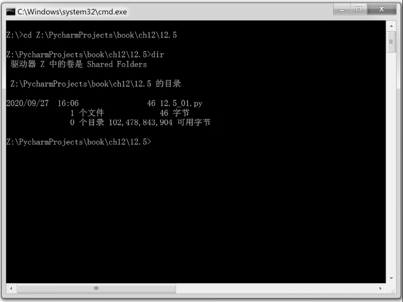
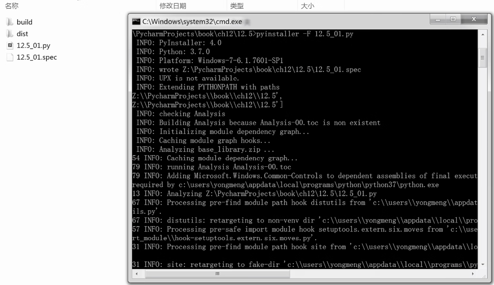

首页 > 编程笔记
Python打包成exe可执行文件
程序编写完后，一般在 Windows 中打包成 EXE 文件，这样传输和运行都比较方便，Python 借助 PyInstaller 可将 PY 源码打包成对应的 EXE 文件。
PyInstaller 用于将 Python 程序打包成一个独立、可执行的软件包，支持 Windows、Linux 和 macOS。
PyInstaller 可以读取你编写的 Python 脚本，分析代码以发现脚本执行时所需的其他模块和库。然后，它将收集这些文件的副本（包括活动的 Python 解释器）并将其与脚本放在同一个文件夹中，或者放在同一个可执行文件中。
PyInstaller 已针对 Windows、macOS、GNU 和 Linux 进行了测试。但是，它不是交叉编译器：
PyInstaller 已成功实现与 AIX、Solaris、FreeBSD 和 OpenBSD结合使用，但未在持续集成测试中针对它们进行测试。
PyInstaller 的主要优势如下：
安装命令如下所示：
使用 PyInstaller 打包成 exe 可执行文件的具体步骤为如下。
运行结果如图2所示。

图3：双击 EXE 文件查看运行结果
PyInstaller 用于将 Python 程序打包成一个独立、可执行的软件包，支持 Windows、Linux 和 macOS。
PyInstaller 可以读取你编写的 Python 脚本，分析代码以发现脚本执行时所需的其他模块和库。然后，它将收集这些文件的副本（包括活动的 Python 解释器）并将其与脚本放在同一个文件夹中，或者放在同一个可执行文件中。
PyInstaller 已针对 Windows、macOS、GNU 和 Linux 进行了测试。但是，它不是交叉编译器：
- 要创建 Windows 应用程序，请在 Windows 中运行 PyInstaller；
- 要创建 GNU/Linux 应用程序，请在 GNU/Linux 等环境中运行PyInstaller。
PyInstaller 已成功实现与 AIX、Solaris、FreeBSD 和 OpenBSD结合使用，但未在持续集成测试中针对它们进行测试。
PyInstaller 的主要优势如下：
- 兼容性强，可与 Python 3.5~Python 3.7 配合使用。
- 完全多平台，并使用操作系统支持来加载动态库，从而确保完全兼容。
- 正确捆绑主要的 Python 软件包，例如 NumPy、PyQt4、PyQt5、PySide、Django、wxPython、Matplotlib 和其他现成的软件包。
- 兼容许多现成的第三方包（使外部软件包正常工作所需的大部分功能已经集成）。
- 完全支持 PyQt5、PyQt4、PySide、wxPython、Matplotlib 或 Django 等，而无须手动处理插件或外部数据文件。
安装命令如下所示：
pip install pyinstaller
使用 PyInstaller 打包成 exe 可执行文件的具体步骤为如下。
1) 切换目录
切换到打包程序所在的目录，如图1所示。

图1：切换到打包程序目录
图1：切换到打包程序目录
2) 打包文件
PyInstaller 打包 exe 文件的具体命令为：pyinstaller -F xxx.py
其中 xxx.py 是要打包的文件名。运行结果如图2所示。

图2：运行结果
图2：运行结果
3) 找到 EXE 文件
打包文件后，在生成的 dist 文件夹中找到 exe 文件，在本文中，它的名字是 12.5_01.exe。双击该 EXE 文件查看运行结果，如图3所示。图3：双击 EXE 文件查看运行结果
关注公众号「站长严长生」，在手机上阅读所有教程，随时随地都能学习。内含一款搜索神器，免费下载全网书籍和视频。

微信扫码关注公众号